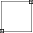

Anatomy of a Drop Shadow
To complete a drop shadow that is capable of expanding and contracting around an object it must first be broken into three parts:
- A large image forming the shadow perimeter
- A small image which forms the top-right corner of the drop shadow
- Another small image which completes the lower-left corner
Illustration:

Return to article